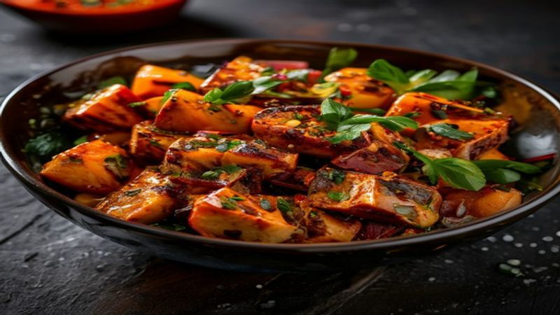

Spicy Tofu Buddha Bowl with Mango Avocado Salsa
A vibrant and healthy Buddha bowl packed with flavor and texture, perfect for a quick, Instagram-worthy meal. This spicy tofu bowl combines zesty mango avocado salsa with crispy tofu for a delicious balance of sweet, spicy, and creamy.
Ingredients
- 1 block firm tofu, pressed and cubed
- 2 tbsp soy sauce
- 1 tbsp maple syrup
- 1 tbsp sriracha
- 1/2 tsp garlic powder
- 1/2 tsp ginger powder
- 1 ripe mango, diced
- 1 avocado, diced
- 1/4 cup cherry tomatoes, halved
- 1/4 cup red onion, finely chopped
- 1 lime, juiced
- 1/4 cup cilantro, chopped
Instructions
Preheat oven to 400°F (200°C). Line a baking sheet with parchment paper.
In a bowl, mix soy sauce, maple syrup, sriracha, garlic powder, and ginger powder. Add tofu and toss to coat.
Spread tofu in a single layer on the baking sheet. Bake for 18-20 minutes, flipping halfway, until golden and crispy.
In a separate bowl, combine mango, avocado, cherry tomatoes, red onion, lime juice, and cilantro. Mix well to create the salsa.
Serve the crispy tofu over a bed of cooked rice or quinoa, topped with the mango avocado salsa.
Garnish with extra cilantro and a sprinkle of chili flakes if desired.